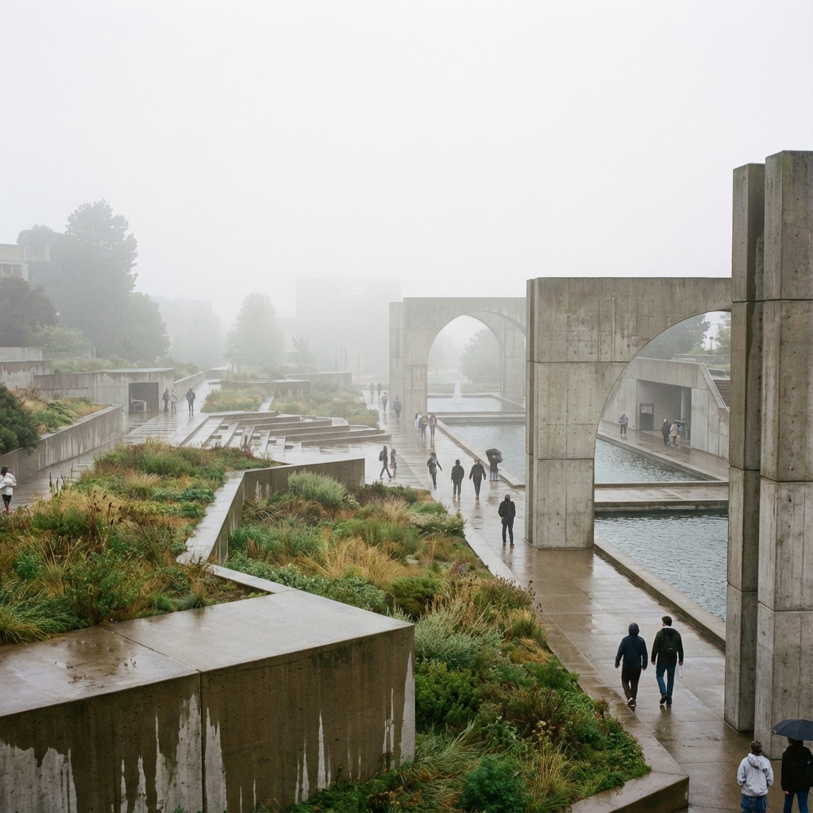
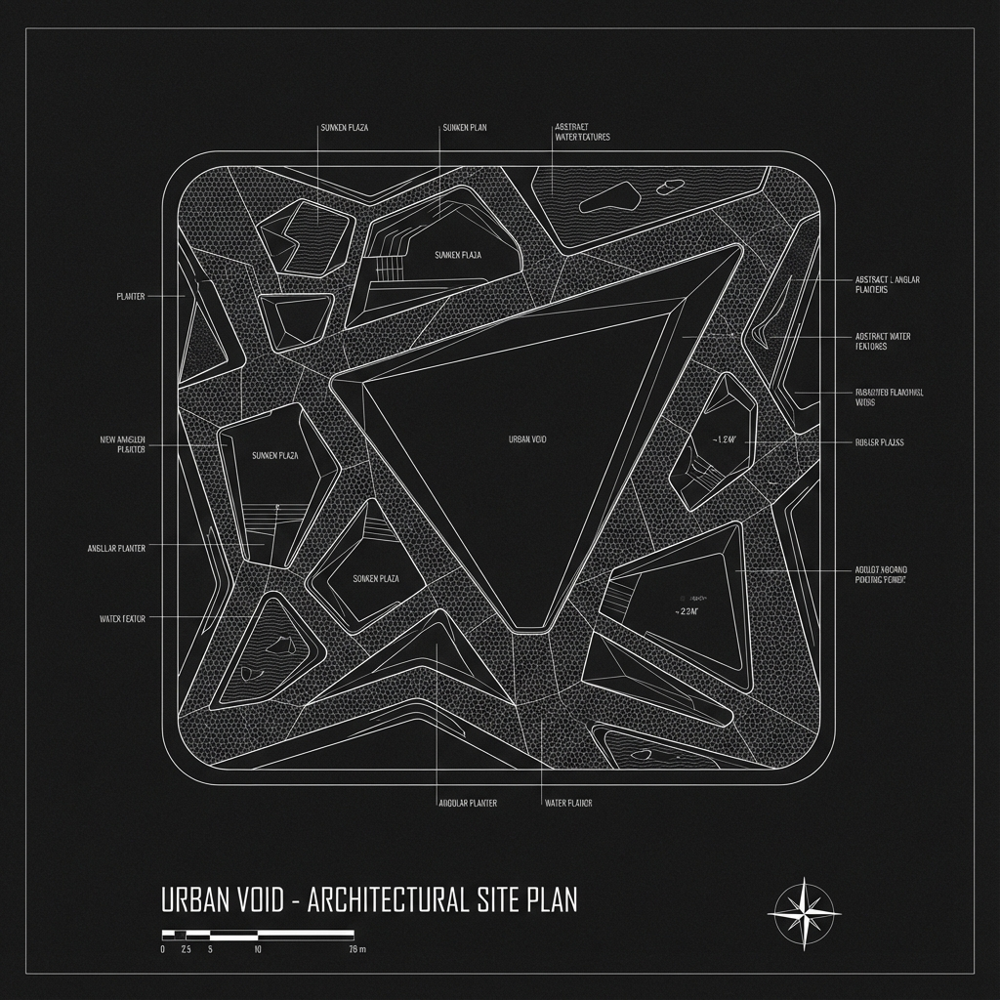

Year
2023
Client
City Development
Area
2500 m²
Status
Competition Entry
Concept
Urban Void challenges the traditional notion of a park as a green oasis. Instead, it proposes a "sculpted emptiness"—a series of geometric concrete forms that invite skateboards, performances, and quiet reflection in equal measure.
The design plays with levels and shadows, creating a dynamic landscape that changes character throughout the day as the sun moves across the brutalist forms.

Perspective View

Site Plan